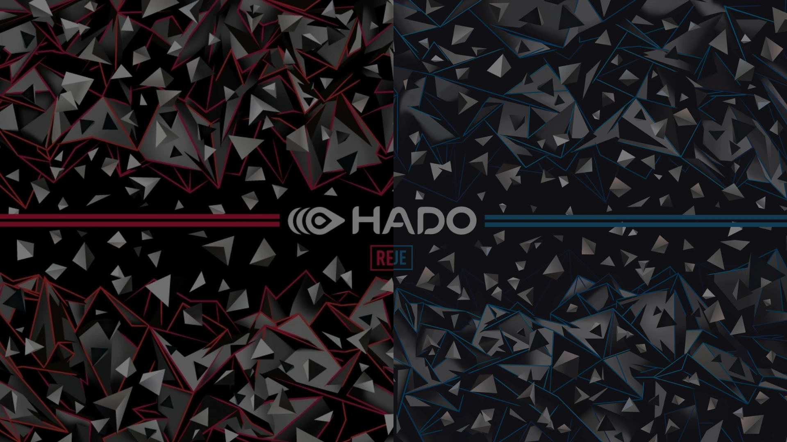

01 / ATTACK
속도와 크기를 조절하다
WASD로 이동하고, 마우스 우클릭으로 X볼을 발사하세요.

기획 기준 규칙입니다. 제공 기능과 최종 게임 설정은 확인 후 갱신됩니다.
HadoVerse는 HADO의 전투 경험을 가상 공간으로 확장한 Unreal Engine 기반 액션 게임입니다.
에너지 공격과 방어 기술을 활용하여 상대와 경쟁하고, 빠른 판단과 전략적인 움직임으로 승리를 향해 나아갑니다.
공격의 타이밍과 방어의 선택. 아레나의 흐름을 바꿀 당신의 플레이.
WASD로 이동하고, 마우스 우클릭으로 X볼을 발사하세요.
차징으로 전투의 다음 순간을 준비하세요. 세부 수치와 조작법은 실제 설정 확인 후 안내합니다.
마우스 왼쪽 버튼을 길게 눌러 쉴드를 설치하고 상대의 공격에 대응하세요.
빠르게 이해하고, 매 경기 새로운 선택을 만들어보세요.
1대1 대전으로 상대와 맞붙는 전투 경험. 이번 테스트의 온라인 멀티플레이 제공 여부는 별도 안내합니다.
공격, 차징, 쉴드의 균형을 고려하는 플레이.
가상 아레나와 액션 경험을 구현하는 Unreal Engine 기반 프로젝트.
게임 파일은 2026년 11월 16일(월) 공개 예정입니다.